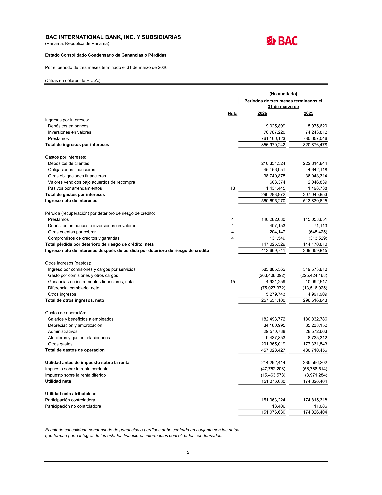
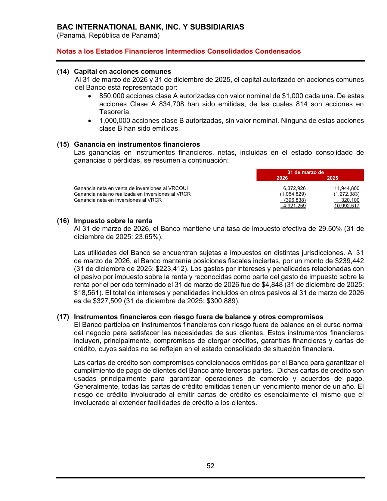
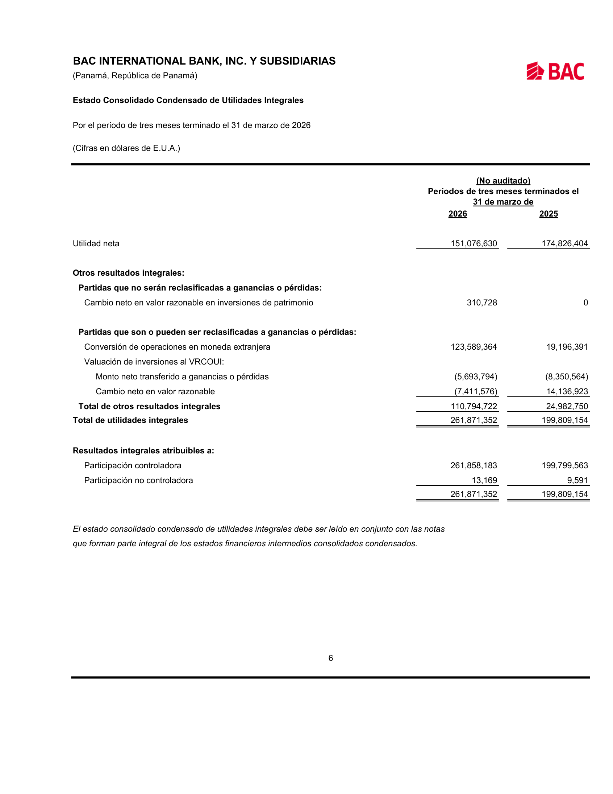
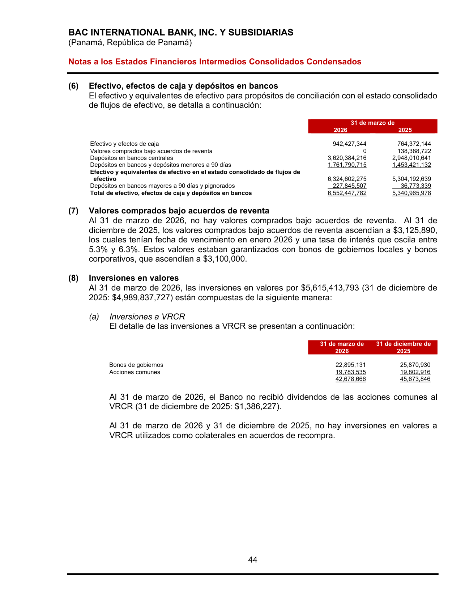
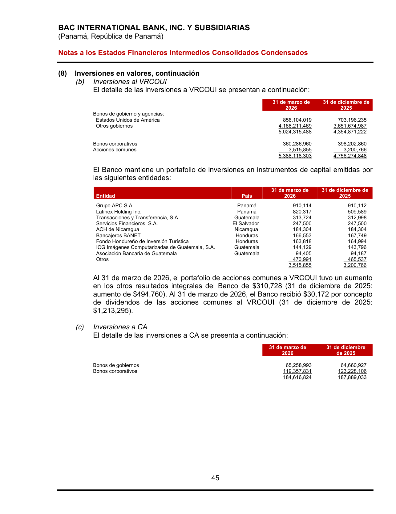
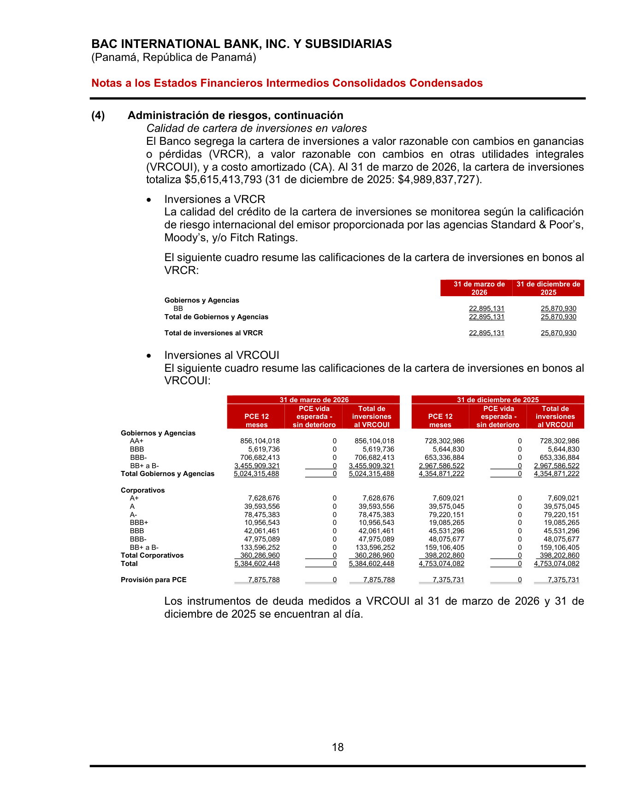

<title>BAC — Renglones con ganancias del portafolio de inversiones</title>
<meta name="viewport" content="width=device-width, initial-scale=1">
<style>
<style>
:root{
  --plane:#eef1f5; --surface:#f8f9fb; --surface-2:#ffffff;
  --ink:#0f1620; --ink-2:#475062; --muted:#8a91a0; --hair:#dde2ea; --hair-2:#c7cedb;
  --accent:#2a78d6; --accent-soft:#e7f0fc;
  --s1:#2a78d6; --s2:#1baf7a; --s3:#c98a00; --s6:#e34948;
  --good:#0a8a3a; --warn:#b8770a; --crit:#c0392b;
  --good-bg:#e4f4ea; --warn-bg:#fbf1dc; --crit-bg:#fae5e2; --info-bg:#e7f0fc;
  --shadow:0 1px 2px rgba(15,22,32,.04),0 8px 24px rgba(15,22,32,.06);
  --mono:ui-monospace,"SF Mono","SFMono-Regular",Menlo,Consolas,monospace;
  --sans:system-ui,-apple-system,"Segoe UI",Roboto,sans-serif;
}
@media (prefers-color-scheme:dark){
  :root{
    --plane:#0a0c10; --surface:#12161d; --surface-2:#171c25;
    --ink:#f2f5fa; --ink-2:#a8b0c0; --muted:#6b7382; --hair:#242a34; --hair-2:#2f3744;
    --accent:#4a90e2; --accent-soft:#16273c;
    --s1:#3987e5; --s2:#199e70; --s3:#c98500; --s6:#e66767;
    --good:#3bbf6a; --warn:#e0a52c; --crit:#e8756a;
    --good-bg:#12291b; --warn-bg:#2a2210; --crit-bg:#2c1815; --info-bg:#16273c;
    --shadow:0 1px 2px rgba(0,0,0,.3),0 10px 30px rgba(0,0,0,.4);
  }
}
:root[data-theme="dark"]{
  --plane:#0a0c10; --surface:#12161d; --surface-2:#171c25;
  --ink:#f2f5fa; --ink-2:#a8b0c0; --muted:#6b7382; --hair:#242a34; --hair-2:#2f3744;
  --accent:#4a90e2; --accent-soft:#16273c;
  --s1:#3987e5; --s2:#199e70; --s3:#c98500; --s6:#e66767;
  --good:#3bbf6a; --warn:#e0a52c; --crit:#e8756a;
  --good-bg:#12291b; --warn-bg:#2a2210; --crit-bg:#2c1815; --info-bg:#16273c;
}
:root[data-theme="light"]{
  --plane:#eef1f5; --surface:#f8f9fb; --surface-2:#ffffff;
  --ink:#0f1620; --ink-2:#475062; --muted:#8a91a0; --hair:#dde2ea; --hair-2:#c7cedb;
  --accent:#2a78d6; --accent-soft:#e7f0fc;
  --s1:#2a78d6; --s2:#1baf7a; --s3:#c98a00; --s6:#e34948;
  --good:#0a8a3a; --warn:#b8770a; --crit:#c0392b;
  --good-bg:#e4f4ea; --warn-bg:#fbf1dc; --crit-bg:#fae5e2; --info-bg:#e7f0fc;
}
*{box-sizing:border-box}
html{scroll-behavior:smooth}
body{margin:0;background:var(--plane);color:var(--ink);font-family:var(--sans);
  font-size:16px;line-height:1.58;-webkit-font-smoothing:antialiased}
.wrap{max-width:1000px;margin:0 auto;padding:0 24px}
h1,h2,h3{text-wrap:balance;line-height:1.18;margin:0}
.mono{font-family:var(--mono)}
a{color:var(--accent)}

header.top{position:sticky;top:0;z-index:40;background:color-mix(in srgb,var(--plane) 90%,transparent);
  backdrop-filter:blur(10px);border-bottom:1px solid var(--hair)}
.top-in{display:flex;align-items:center;gap:14px;height:56px;max-width:1000px;margin:0 auto;padding:0 24px}
.brandmark{display:flex;align-items:center;gap:10px;font-weight:680;letter-spacing:-.01em;font-size:15px}
.brandmark .dot{width:9px;height:9px;border-radius:50%;background:var(--accent);box-shadow:0 0 0 4px var(--accent-soft)}
.top-spacer{flex:1}
.top-in a{font-size:13px;color:var(--ink-2);text-decoration:none}
.top-in a:hover{color:var(--accent)}

.hero{padding:44px 0 26px;border-bottom:1px solid var(--hair)}
.eyebrow{font-family:var(--mono);font-size:12px;letter-spacing:.08em;text-transform:uppercase;color:var(--accent);font-weight:600}
h1{font-size:33px;font-weight:720;letter-spacing:-.02em;margin:12px 0 10px}
.lede{font-size:17px;color:var(--ink-2);max-width:74ch}
.meta-row{display:flex;flex-wrap:wrap;gap:8px;margin-top:18px}
.pill{font-size:12.5px;background:var(--surface-2);border:1px solid var(--hair);border-radius:999px;padding:4px 12px;color:var(--ink-2)}
.pill b{color:var(--ink)}

section{padding:34px 0;border-bottom:1px solid var(--hair)}
.sec-head{display:flex;align-items:baseline;gap:12px;margin-bottom:14px}
.sec-num{font-family:var(--mono);font-size:12px;color:var(--muted);font-weight:600}
h2{font-size:23px;font-weight:680;letter-spacing:-.01em}
h3{font-size:15.5px;font-weight:640;margin:20px 0 7px}
p{margin:0 0 12px}
.sub{color:var(--ink-2)}

.tbl-scroll{overflow-x:auto;margin:14px 0;border:1px solid var(--hair);border-radius:12px}
table{border-collapse:collapse;width:100%;font-size:14px;background:var(--surface-2);min-width:640px}
th,td{text-align:left;padding:9px 13px;border-bottom:1px solid var(--hair);vertical-align:top}
thead th{background:var(--surface);font-weight:640;font-size:12px;color:var(--ink-2);
  text-transform:uppercase;letter-spacing:.03em}
tbody tr:last-child td{border-bottom:none}
.num{text-align:right;font-variant-numeric:tabular-nums;font-family:var(--mono);font-size:13px;white-space:nowrap}
.tot td{font-weight:700;background:color-mix(in srgb,var(--accent-soft) 55%,transparent)}
.sub-row td{background:color-mix(in srgb,var(--surface) 60%,transparent);font-size:13px}
.sub-row td:first-child{padding-left:26px;color:var(--ink-2)}
.neg{color:var(--crit)}
.mini{font-size:12px;color:var(--muted)}

.badge{display:inline-block;font-size:11px;font-weight:640;padding:1px 8px;border-radius:6px;font-family:var(--mono);letter-spacing:.02em;white-space:nowrap}
.b-pl{background:var(--accent-soft);color:var(--accent)}
.b-oci{background:var(--warn-bg);color:var(--warn)}
.b-prov{background:var(--crit-bg);color:var(--crit)}
.b-yes{background:var(--good-bg);color:var(--good)}
.b-no{background:var(--crit-bg);color:var(--crit)}

.callout{display:flex;gap:13px;padding:15px 17px;border-radius:12px;margin:16px 0;font-size:14.5px;line-height:1.5}
.callout .ic{flex:0 0 24px;width:24px;height:24px;border-radius:50%;display:grid;place-items:center;font-weight:700;font-size:14px;color:#fff}
.co-key{background:var(--crit-bg)} .co-key .ic{background:var(--crit)}
.co-info{background:var(--info-bg)} .co-info .ic{background:var(--accent)}
.co-good{background:var(--good-bg)} .co-good .ic{background:var(--good)}

.map{display:grid;grid-template-columns:repeat(auto-fit,minmax(220px,1fr));gap:14px;margin:18px 0}
.mapc{background:var(--surface-2);border:1px solid var(--hair);border-radius:14px;padding:15px 17px;box-shadow:var(--shadow)}
.mapc .t{font-size:12px;color:var(--muted);text-transform:uppercase;letter-spacing:.04em;font-weight:600;margin-bottom:8px}
.mapc ul{margin:0;padding-left:16px;font-size:13.5px;color:var(--ink-2)}
.mapc li{margin:4px 0}
.mapc li b{color:var(--ink)}
.mapc .amt{font-family:var(--mono);font-size:12.5px}

.ev-grid{display:grid;grid-template-columns:repeat(auto-fill,minmax(170px,1fr));gap:12px;margin-top:12px}
.ev{display:block;background:var(--surface-2);border:1px solid var(--hair);border-radius:10px;overflow:hidden;text-decoration:none;color:inherit;box-shadow:var(--shadow)}
.ev img{width:100%;display:block;aspect-ratio:3/4;object-fit:cover;object-position:top;background:#fff;border-bottom:1px solid var(--hair)}
.ev .cap{padding:8px 10px;font-size:12px;color:var(--ink-2)}
.ev .cap b{display:block;color:var(--ink);font-size:12.5px;margin-bottom:1px}
.ev:hover{border-color:var(--accent)}

.kbd{font-family:var(--mono);font-size:12.5px;background:var(--surface);border:1px solid var(--hair-2);border-radius:5px;padding:1px 6px}
footer{padding:30px 0 60px;color:var(--muted);font-size:13px}
@media(max-width:640px){h1{font-size:26px}.hero{padding:32px 0 22px}}
</style>
</style>

<header class="top">
  <div class="top-in">
    <span class="brandmark"><span class="dot"></span>BAC · Ganancias de inversiones</span>
    <span class="top-spacer"></span>
    <a href="index.html">← Radar de Inversiones</a>
  </div>
</header>

<main class="wrap">
  <div class="hero">
    <div class="eyebrow">Nota de trabajo · mapa de renglones</div>
    <h1>¿Dónde aparecen las ganancias del portafolio de inversiones?</h1>
    <p class="lede">Rastreo, renglón por renglón, del último estado financiero de BAC (Interino 1T-2026, no auditado) donde se reconoce ganancia/ingreso del portafolio de valores. A diferencia de Banistmo y Banco General, en BAC la línea de <b>"Ganancia en instrumentos financieros" es 100% portafolio</b> — el cambio de divisas se reporta en una línea <b>separada</b> ("Diferencial cambiario"), así que aquí NO hay renglón mixto que abrir. Perímetro: consolidado Centroamérica.</p>
    <div class="meta-row">
      <span class="pill">Emisor: <b>BAC International Bank, Inc. y Subsidiarias (consolidado Centroamérica)</b></span>
      <span class="pill">Corte: <b>31-mar-2026</b> (interino, no auditado)</span>
      <span class="pill">Período: <b>3 meses (1T)</b></span>
      <span class="pill">Moneda: <b>USD</b> (B/. a la par)</span>
    </div>
  </div>
  <section id="mapa">
    <div class="sec-head"><span class="sec-num">TL;DR</span><h2>El mapa completo — línea de valores limpia</h2></div>
    <p class="sub">En BAC el resultado del portafolio vive en <b>interés</b>, en la <b>Nota 15 ("Ganancia en instrumentos financieros")</b> — que es enteramente de valores — más el ORI y una provisión de deterioro. El diferencial cambiario (una <b>pérdida</b> de US$75 M este trimestre) está fuera, en su propia línea.</p>
    <div class="map">
      <div class="mapc">
        <div class="t">① Estado de Resultados · interés</div>
        <ul>
          <li><b>Inversiones en valores</b> <span class="amt">76,787,220</span> — el mayor ingreso de intereses de cartera del perímetro</li>
        </ul>
      </div>
      <div class="mapc">
        <div class="t">② Estado de Resultados · Nota 15</div>
        <ul>
          <li><b>Ganancias en instrumentos financieros, neta</b> <span class="amt">4,921,259</span> — 100% valores (venta VRCOUI + valuación VRCR)</li>
        </ul>
      </div>
      <div class="mapc">
        <div class="t">③ Resultado Integral (ORI)</div>
        <ul>
          <li><b>Cambio neto en valor razonable</b> <span class="amt neg">(7,411,576)</span> — no realizada</li>
          <li><b>Monto neto transferido a P&amp;L</b> <span class="amt neg">(5,693,794)</span> — reciclaje</li>
          <li>Patrimonio (acciones) <span class="amt">310,728</span> — no reciclable</li>
        </ul>
      </div>
      <div class="mapc">
        <div class="t">④ P&amp;L · deterioro (netea)</div>
        <ul>
          <li><b>Depósitos en bancos e inversiones en valores</b> <span class="amt neg">(407,153)</span> — línea combinada (Nota 4)</li>
        </ul>
      </div>
    </div>
    <div class="callout co-good"><span class="ic">✓</span>
      <div><b>Aquí no hay renglón mixto que abrir.</b> La línea "Ganancias en instrumentos financieros, neta" (4,921,259) es <b>enteramente del portafolio de valores</b>: venta de inversiones a VRCOUI 6,372,926, menos valuación no realizada VRCR (1,054,829), menos realizado VRCR (396,838). El <b>diferencial cambiario</b> se presenta en una línea aparte del P&amp;L — y este trimestre fue una <b>pérdida de US$75.0 M</b>, que NO debe confundirse con el resultado del portafolio. El único caveat es que la línea de <b>deterioro combina depósitos en bancos con inversiones</b>, así que el deterioro aislado de solo valores no se puede separar.</div>
    </div>
  </section>
  <section>
    <div class="sec-head"><span class="sec-num">01</span><h2>Estado de Ganancias o Pérdidas (P&amp;L)</h2></div>
    <p class="sub">PDF p.7. Un renglón de <b>interés</b> y un renglón de <b>valuación/venta</b> (Nota 15) — este último ya es limpio de valores. El diferencial cambiario está en su propia línea, no mezclado.</p>
    <div class="tbl-scroll"><table>
      <thead><tr><th>Renglón (P&amp;L)</th><th class="num">1T-2026</th><th class="num">1T-2025</th><th>Tipo</th><th>¿Solo portafolio?</th></tr></thead>
      <tbody>
        <tr><td><b>Ingresos por intereses — "Inversiones en valores"</b></td><td class="num">76,787,220</td><td class="num">74,243,812</td><td><span class="badge b-pl">Interés</span></td><td><span class="badge b-yes">Sí — cartera</span></td></tr>
        <tr><td><b>Ganancias en instrumentos financieros, neta</b> <span class="mini">(Nota 15)</span></td><td class="num">4,921,259</td><td class="num">10,992,517</td><td><span class="badge b-pl">Valuación/venta</span></td><td><span class="badge b-yes">Sí — 100% valores</span></td></tr>
        <tr><td><span class="mini">memo:</span> Diferencial cambiario, neto <span class="mini">(fuera del portafolio)</span></td><td class="num neg">(75,027,372)</td><td class="num neg">(13,516,925)</td><td><span class="badge b-oci">FX</span></td><td><span class="badge b-no">No — divisas</span></td></tr>
      </tbody>
    </table></div>
    <p class="mini">La línea de FX se muestra como memo para dejar claro que NO forma parte del resultado del portafolio (y que este trimestre fue una pérdida grande). No se suma al resultado de valores.</p>
  </section>
  <section>
    <div class="sec-head"><span class="sec-num">02</span><h2>Nota 15 — desglose de "Ganancia en instrumentos financieros"</h2></div>
    <p class="sub">PDF p.53. Los tres componentes son de valores; no hay divisas ni derivados dentro de esta nota.</p>
    <div class="tbl-scroll"><table>
      <thead><tr><th>Componente</th><th class="num">1T-2026</th><th class="num">1T-2025</th><th>¿Portafolio de inversiones?</th></tr></thead>
      <tbody>
        <tr><td>Ganancia neta en venta de inversiones al VRCOUI</td><td class="num">6,372,926</td><td class="num">11,944,800</td><td><span class="badge b-yes">Sí — venta FVOCI</span></td></tr>
        <tr><td>Ganancia neta no realizada en inversiones al VRCR</td><td class="num neg">(1,054,829)</td><td class="num neg">(1,272,383)</td><td><span class="badge b-yes">Sí — valuación FVTPL</span></td></tr>
        <tr><td>Ganancia neta en inversiones al VRCR</td><td class="num neg">(396,838)</td><td class="num">320,100</td><td><span class="badge b-yes">Sí — realizado FVTPL</span></td></tr>
        <tr class="tot"><td>Total (= línea del P&amp;L)</td><td class="num">4,921,259</td><td class="num">10,992,517</td><td><span class="badge b-yes">Sí</span></td></tr>
        <tr class="sub-row"><td>→ Subtotal <b>portafolio de inversiones</b></td><td class="num">4,921,259</td><td class="num">10,992,517</td><td><span class="badge b-yes">Sí</span></td></tr>
      </tbody>
    </table></div>
    <p class="mini">El núcleo del resultado es la <b>venta de bonos a VRCOUI</b> (6.37 M), consistente con una cartera 96% AFS/VRCOUI. La cartera creció +12.5% en el trimestre, casi todo a soberanos de Centroamérica sub-grado.</p>
  </section>
  <section>
    <div class="sec-head"><span class="sec-num">03</span><h2>Estado de Resultado Integral (ORI / patrimonio)</h2></div>
    <p class="sub">PDF p.8 ("Estado Consolidado Condensado de Utilidades Integrales"). Ganancia/pérdida no realizada de la cartera VRCOUI y su reciclaje al P&amp;L. Este trimestre la valuación no realizada fue negativa.</p>
    <div class="tbl-scroll"><table>
      <thead><tr><th>Renglón (ORI)</th><th class="num">1T-2026</th><th class="num">1T-2025</th><th>Naturaleza</th></tr></thead>
      <tbody>
        <tr><td><b>Cambio neto en valor razonable</b> (VRCOUI)</td><td class="num neg">(7,411,576)</td><td class="num">14,136,923</td><td><span class="badge b-oci">No realizada · FVOCI deuda</span></td></tr>
        <tr><td><b>Monto neto transferido a ganancias o pérdidas</b></td><td class="num neg">(5,693,794)</td><td class="num neg">(8,350,564)</td><td><span class="badge b-oci">Reciclaje al P&amp;L</span></td></tr>
        <tr><td>Cambio neto en valor razonable en inversiones de patrimonio</td><td class="num">310,728</td><td class="num">0</td><td><span class="badge b-oci">No reciclable · acciones</span></td></tr>
      </tbody>
    </table></div>
    <div class="callout co-info"><span class="ic">i</span>
      <div><b>Reciclaje grande.</b> BAC transfirió US$5.69 M del ORI al P&amp;L al vender bonos VRCOUI (el reciclaje que aparece como "venta VRCOUI 6.37 M" en la Nota 15). Es coherente con un libro que rota AFS activamente. La valuación no realizada del trimestre fue una pérdida de 7.4 M (tasas al alza).</div>
    </div>
  </section>
  <section>
    <div class="sec-head"><span class="sec-num">04</span><h2>P&amp;L — deterioro sobre la cartera (netea)</h2></div>
    <p class="sub">PDF p.7. En BAC el deterioro de inversiones se reporta <b>combinado con el de depósitos en bancos</b> en una sola línea (Nota 4), así que el deterioro aislado de solo valores no se divulga por separado.</p>
    <div class="tbl-scroll"><table>
      <thead><tr><th>Renglón</th><th class="num">1T-2026</th><th class="num">1T-2025</th><th>Efecto</th></tr></thead>
      <tbody>
        <tr><td>Pérdida por deterioro — "Depósitos en bancos e inversiones en valores" <span class="mini">(Nota 4)</span></td><td class="num">407,153</td><td class="num">71,113</td><td class="mini">cargo combinado</td></tr>
      </tbody>
    </table></div>
    <p class="mini">Limitación de divulgación: no es posible aislar cuánto del cargo corresponde solo a la cartera de valores.</p>
  </section>
  <section>
    <div class="sec-head"><span class="sec-num">05</span><h2>Resumen — resultado del portafolio en el período</h2></div>
    <p class="sub">Sumando los renglones del portafolio (la línea de valores ya es limpia), el resultado del trimestre:</p>
    <div class="tbl-scroll"><table>
      <thead><tr><th>Concepto (solo portafolio de inversiones)</th><th class="num">1T-2026</th><th>Dónde</th></tr></thead>
      <tbody>
        <tr><td>Interés devengado ("Inversiones en valores")</td><td class="num">76,787,220</td><td class="mini">P&amp;L · interés</td></tr>
        <tr><td>Ganancia neta en instrumentos financieros (100% valores)</td><td class="num">4,921,259</td><td class="mini">P&amp;L · Nota 15</td></tr>
        <tr><td>(−) Deterioro (combinado con depósitos en bancos)</td><td class="num neg">(407,153)</td><td class="mini">P&amp;L · Nota 4</td></tr>
        <tr class="tot"><td>= Resultado del portafolio en <b>utilidad neta</b> (aprox.)</td><td class="num">81,301,326</td><td class="mini">P&amp;L</td></tr>
        <tr><td>(+) Cambio no realizado VRCOUI (a patrimonio)</td><td class="num neg">(7,411,576)</td><td class="mini">ORI</td></tr>
        <tr class="tot"><td>= Resultado <b>integral</b> del portafolio (P&amp;L + ORI)*</td><td class="num">73,889,750</td><td class="mini">P&amp;L + ORI</td></tr>
      </tbody>
    </table></div>
    <p class="mini">* Aproximado porque el deterioro está combinado con depósitos en bancos. El reciclaje (5.69 M) no se doble-cuenta. Excluye el diferencial cambiario (pérdida 75.0 M), que NO es del portafolio. Cifras de 3 meses, no auditadas.</p>
  </section>
  <section>
    <div class="sec-head"><span class="sec-num">06</span><h2>Evidencia — páginas fuente</h2></div>
    <p class="sub">Capturas de las páginas exactas del 31-mar-2026. Clic para ampliar. Fuente PDF: <a href="https://www.baccredomatic.com/sites/default/files/2026-05/PAN_EF_BIB_SUBS_0326.pdf">Interino consolidado Mar-2026 (PAN_EF_BIB_SUBS_0326)</a>.</p>
    <div class="ev-grid">
      <a class="ev" href="capturas-fuentes/bac-mar2026_p007_estado-resultados.png"><div class="cap"><b>P&amp;L · p.7</b>Interés valores 76.8M · Ganancia instrumentos 4.9M · FX (75.0M)</div></a>
      <a class="ev" href="capturas-fuentes/bac-mar2026_p053_nota15-ganancia-instrumentos.png"><div class="cap"><b>Nota 15 · p.53</b>Desglose 100% valores (venta VRCOUI + VRCR)</div></a>
      <a class="ev" href="capturas-fuentes/bac-mar2026_p008_resultado-integral.png"><div class="cap"><b>ORI · p.8</b>Valuación VRCOUI (7.4M) · transferencia (5.69M)</div></a>
      <a class="ev" href="capturas-fuentes/bac-mar2026_p045_nota8-vrcr.png"><div class="cap"><b>Nota 8 · p.45</b>Inversiones a VRCR (FVTPL)</div></a>
      <a class="ev" href="capturas-fuentes/bac-mar2026_p046_nota8-vrcoui-ca.png"><div class="cap"><b>Nota 8 · p.46</b>Inversiones a VRCOUI (5,388M) y costo amortizado</div></a>
      <a class="ev" href="capturas-fuentes/bac-mar2026_p019_ratings-vrcoui.png"><div class="cap"><b>Ratings · p.19</b>Calidad crediticia VRCOUI (BB+ a B- 3,456M)</div></a>
    </div>
  </section>
  <section>
    <div class="sec-head"><span class="sec-num">07</span><h2>Conclusión</h2></div>
    <div class="callout co-good"><span class="ic">✓</span>
      <div><b>Renglones identificados — sin renglón mixto.</b> El resultado del portafolio de BAC aparece en interés ("Inversiones en valores"), la Nota 15 ("Ganancia en instrumentos financieros", <b>100% valores</b>), el ORI (valuación VRCOUI + reciclaje) y una provisión de deterioro combinada. El contraste con Banistmo/BG es claro: aquí <b>no hay que abrir</b> la línea de ganancia para retirar divisas o derivados — el FX está separado. Verificado contra el interino Mar-2026.</div>
    </div>
    <p class="mini">Preparado para la mesa de tesorería · corte 31-mar-2026. Reporte completo en <a href="index.html">index.html</a> · dataset en <span class="kbd">datos-extraidos.md</span>.</p>
  </section>

</main>
<footer><div class="wrap">Radar de Inversiones — Banca de Panamá · Banistmo como banco base · datos 2024–2026.</div></footer>
<script>
(function(){ try{ var t=localStorage.getItem("theme"); if(t)document.documentElement.setAttribute("data-theme",t); }catch(e){} })();
</script>
